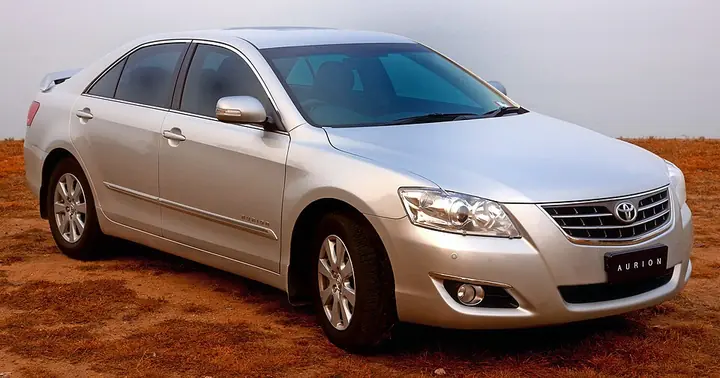

Toyota Aurion
Second generation (XV50; 2011) · 2011–2020
Abstract
This generation of the Toyota Aurion is a mid-size car, built February 2012 – August 2017 (Aurion) in Japan: Toyota, Aichi (Tsutsumi plant), Australia: Altona, China: Nansha, Guangzhou and other plants. Body styles: 4-door sedan. Layout: Front-engine, front-wheel-drive. Designed by Hirotada Kobayashi and Tomonori Matsumoto (regular: 2009), Kentarou Asakura (sports version, regular: 2009), Hirofumi Fukui and Kazumi Kowaki (prestige: 2009). This generation has its own article: Toyota Camry (XV50).

_Atara_S_sedan.jpg){kind=link}
1Specifications
| Production | February 2012 – August 2017 (Aurion)August 2011 – May 2017 (Japan, US)October 2011 – October 2017 (Australia)November 2011 – December 2017 (China)November 2011 – March 2018 (Russia)December 2011 – August 2020 (Taiwan)March 2012 – September 2018 (Thailand)May 2012 – October 2018 (Malaysia)July 2012 – March 2019 (Vietnam)August 2012 – November 2018 (India) |
|---|---|
| Model years | 2012–2017 |
| Assembly | Japan: Toyota, Aichi (Tsutsumi plant)Australia: AltonaChina: Nansha, GuangzhouIndia: Bidadi (TKML)Malaysia: Shah Alam (UMW Toyota Motor)Russia: Saint PetersburgTaiwan: Zhongli (Kuozui Motors)Thailand: ChachoengsaoUnited States: Georgetown, Kentucky (TMMK); Lafayette, Indiana (SIA)Vietnam: Phúc Yên, Vĩnh Phúc |
| Designer | Hirotada Kobayashi and Tomonori Matsumoto (regular: 2009)Kentarou Asakura (sports version, regular: 2009)Hirofumi Fukui and Kazumi Kowaki (prestige: 2009)Keisuke Matsuno (hybrid version, prestige: 2009)Matt Sperling and Kengo Iwanaga (facelift, regular: 2012) |
| Class | Mid-size car |
| Body style | 4-door sedan |
| Layout | Front-engine, front-wheel-drive |
| Platform | Toyota K platform |
| Engine | 2.0 L 1AZ-FE VVT-i I4 145 hp2.0 L 6AR-FSE VVT-iW D-4S I4 165 hp (Malaysia, Thailand, Taiwan, Russia and China)2.5 L 2AR-FE Dual VVT-i I4 178–181 hp2.5 L 5AR-FE Dual VVT-i I4 173 hp (China)3.5 L 2GR-FE Dual VVT-i V6 268 hp2.5 L 2AR-FXE Dual VVT-i I4 154 hp Hybrid electric |
| Electric motor | 105 kW 2JM permanent magnet synchronous (hybrid) |
| Transmission | 4/6-speed automatic6-speed manualeCVT (hybrid) |
| Battery | 1.6 kWh Panasonic High voltage NiMH |
| Wheelbase | 2775 mm |
| Length | 4865 mm (US & Asia)4820 mm |
| Width | 1820 mm |
| Height | 1470 mm |
| Weight | 3190 lb (LE)3240 lb (SE)3395 lb (XLE V6)3420 lb (SE V6) |
| Also called | Daihatsu Altis (Prestige, Japan; 2012–2017)Toyota Aurion (Prestige, Australia & GCC; 2012–2017) |
| Related | Lexus ES (XV60)Toyota Avalon (XX40) |
| Predecessor | Toyota Camry (XV40) (regular)Toyota Aurion (XV40) (prestige) |
| Successor | Toyota Camry (XV70) |
2Versions
- 2014 facelift
- Camry Hybrid
3Previous generations

.jpg){kind=link}